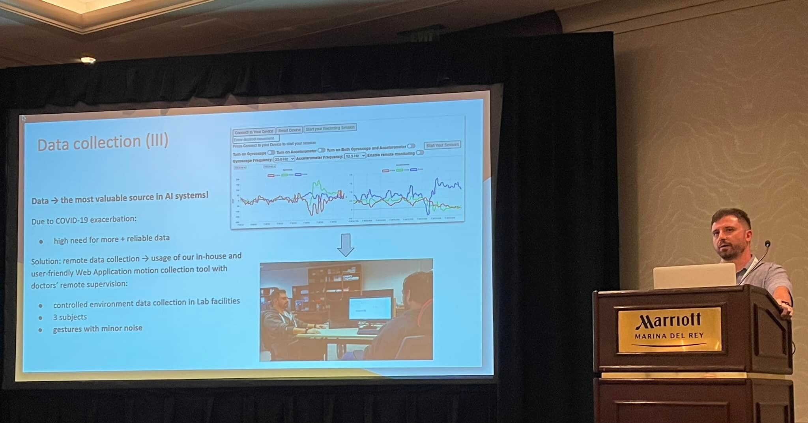

Publications

Journals
Vlachos, Vasileios, Yannis C. Stamatiou, Pantelis Tzamalis, and Sotiris Nikoletseas. "The SAINT observatory subsystem: an open-source intelligence tool for uncovering cybersecurity threats." International Journal of Information Security 21, no. 5 (2022): 1091-1106.
Refereed Conferences
Tzamalis, Pantelis, Andreas Bardoutsos, Dimitris Markantonatos, Christoforos Raptopoulos, Sotiris Nikoletseas, Xenophon Aggelides, and Nikos Papadopoulos. "End-to-end Gesture Recognition Framework for the Identification of Allergic Rhinitis Symptoms." In 2022 18th International Conference on Distributed Computing in Sensor Systems (DCOSS), pp. 25-34. IEEE, 2022.
Bothos, Ioannis, Vasileios Vlachos, Dimitris M. Kyriazanos, Ioannis Stamatiou, Konstantinos Georgios Thanos, Pantelis Tzamalis, Sotirios Nikoletseas, and Stelios CA Thomopoulos. "Modelling cyber-risk in an economic perspective." In 2021 IEEE International Conference on Cyber Security and Resilience (CSR), pp. 372-377. IEEE, 2021.
Bardoutsos, Andreas, Giorgos Matzarapis, Sotiris Nikoletseas, Paul G. Spirakis, and Pantelis Tzamalis. "A Complementary Sensing Platform for a holistic approach to Allergic Rhinitis monitoring." In 2021 17th International Conference on Distributed Computing in Sensor Systems (DCOSS), pp. 171-180. IEEE, 2021.
Bardoutsos, Andreas, Dimitris Markantonatos, Sotiris Nikoletseas, Paul G. Spirakis, and Pantelis Tzamalis. "A human-centered Web-based tool for the effective real-time motion data collection and annotation from BLE IoT devices." In 2021 17th International Conference on Distributed Computing in Sensor Systems (DCOSS), pp. 380-389. IEEE, 2021.
Aggelides, Xenophon, Andreas Bardoutsos, Sotiris Nikoletseas, Nikos Papadopoulos, Christoforos Raptopoulos, and Pantelis Tzamalis. "A gesture recognition approach to classifying allergic rhinitis gestures using wrist-worn devices: a multidisciplinary case study." In 2020 16th International Conference on Distributed Computing in Sensor Systems (DCOSS), pp. 1-10. IEEE, 2020.
Bardoutsos, Andreas, Gabriel Filios, Ioannis Katsidimas, Thomas Krousarlis, Sotiris Nikoletseas, and Pantelis Tzamalis. "A multidimensional human-centric framework for environmental intelligence: Air pollution and noise in smart cities." In 2020 16th International Conference on Distributed Computing in Sensor Systems (DCOSS), pp. 155-164. IEEE, 2020.
Tzamalis, Pantelis, Pantelis Vikatos, and Sotiris Nikoletseas. "A hybridization of mobile crowdsensing, twitter analytics, and sensor data for the holistic approach of pollen onsets detection." In 2019 15th International Conference on Distributed Computing in Sensor Systems (DCOSS), pp. 188-191. IEEE, 2019.
Vlachos, Vasileios, Yannis C. Stamatiou, Pantelis Tzamalis, Sotiris Nikoletseas, and Kyriaki Chantzi. "A social network analysis tool for uncovering cybersecurity threats." In 6th International Symposium for ICS & SCADA Cyber Security Research 2019 6, pp. 97-106. 2019.
Kalogiros, Lampros A., Kostas Lagouvardos, Sotiris Nikoletseas, Nikos Papadopoulos, and Pantelis Tzamalis. "Allergymap: a hybrid mhealth mobile crowdsensing system for allergic diseases epidemiology: a multidisciplinary case study." In 2018 IEEE International Conference on Pervasive Computing and Communications Workshops (PerCom Workshops), pp. 597-602. IEEE, 2018.
Demos
Aggelides, Xenophon, Paraskevi Xepapadaki, Pavlos Vidalis, Nikoletta Rovina, Nikolaos Gavogiannakis, Sotiris Nikoletseas and Pantelis Tzamalis. "Personal Allergy Tracker (PAT): Description of a study protocol utilizing m-Health technology for monitoring allergic rhinitis. Can mobile technology improve control?." In ALLERGY, vol. 75, pp. 52-53. 111 RIVER ST, HOBOKEN 07030-5774, NJ USA: WILEY, 2020.